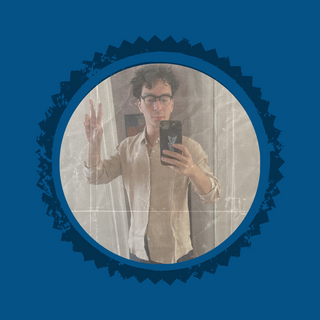

|  |
Rapha J. BraunerCardano SPO of Waffle Pool [WFFL] 🧇
Bio: |
Find out more information about his pool here
or
Contact him directly here
| Skill | Level | Note |
|---|---|---|
| Haskell | Intermediate | Learning since January 2022 |
| Python | Intermediate | Learning since September 2021 |
| HTML & CSS | Intermediate | Learning since June 2022 |
| JavaScript | Beginner | Learning since September 2022 |
Cardano-related: Plutus (Cardano), Marlowe
Other: Fluent in French and Mandarin Chinese